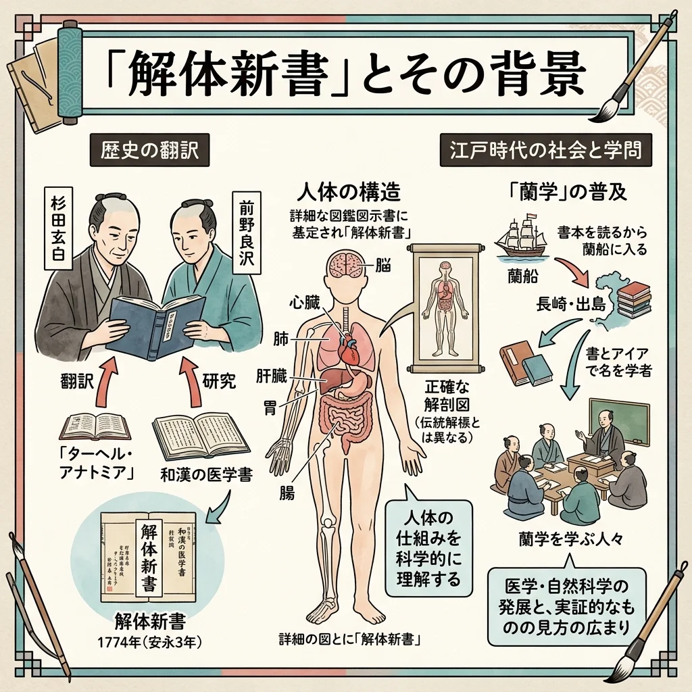
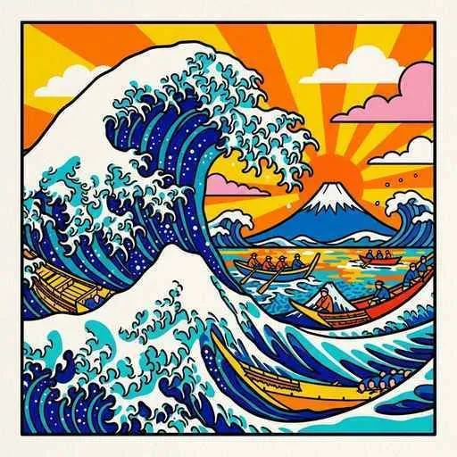

20. 新しい学問�E誕生と化政斁E��
江戸時代も後半に入ると、人、E�E知皁E��奁E��E��高まり、西洋�E高度な科学技術を学ぶ「蘭学」や、日本のルーチE��探る「国学」とぁE��た新しい学問が誕生しました。また、文化�E中忁E�E江戸へと移り、皮肉やユーモアにあ�Eれる庶民�E斁E��が栁E��ました。今回は、新しい学問�E斁E��の開花と、幕府�E終わり�E足音が聞こえてくる「天保�E改革」を解説します！E/p>
1. 新しい学問�E誕生�E�蘭学・国学・科学技術！E/h2>
鎖国下であっても、E��崎�E出島を通じてオランダから入ってくる西洋�E書物は、日本の知識人たちに決定的な影響を与えました、E/p>
① 蘭学�E�らんがく）�E大成と『解体新書、E/h3>
オランダ語を通じて西洋�E医学、天斁E��、物琁E��などを学ぶ学問を蘭学�E�らんがく！E/span>と呼びます、E 医師の杉田玁E���E�すぎたげんぱく！E/span>めE��野良沢�E�まえ�EりょぁE��く）らは、オランダの解剖書を苦忁E��て翻訳し、E774年に日本初�E本格皁E��西洋翻訳医学書である、Espan class="marker-orange">解体新書�E�かぁE��ぁE��んしめE��E/span>』を出版しました。これにより、日本の医学は一気に近代化へ進みました、E/p>
仏教めE�E教など、中国から伝わってきた思想に頼る�Eではなく、日本古代の書物を研究して、日本独自の精神や道徳を�EらかにしよぁE��する学問を国学�E�こくがく！E/span>と呼びます、E 本屁E��長�E�もとおりのりなが！E/span>は、E0年以上かけて日本の最古の神話・歴史書である『古事記』を研究し、大著、Espan class="marker-orange">古事記伝（こじきでん！E/span>』を完�Eさせて国学を大成しました。この思想は、�Eちに天皁E��敬ぁE��尊王思想�E�そん�EぁE��そう�E�」と結�Eつき、幕末の志士たちに受け継がれました、E/p>
伊�E忠敬�E�いのぁE��だたか�E�E/span>は、E0歳を過ぎてから本格皁E��測量技術を学び、なんと紁E7年間かけて日本全国の沿岸を実際に歩ぁE��測量しました。その結果、現代の衛星写真と比べてもほとんど誤差がなぁE��めて正確な日本地図�E�『大日本沿海輿地全図』）を作り上げ、世界を驚かせました、E/p>
 図1�E�杉田玁E��らが西洋医学の解剖書を翻訳して出版した『解体新書』�Eイメージ 19世紀の初め�E�江戸時代後半�E�、文化�E中忁E��は上方�E�大坂�E京都�E�かめE*江戸**へと移りました。封E���E徳川家斉（いえなり）�Eのん�Eりとした政治の裏で、E*江戸の庶民（町人�E�E*の遊�E忁E��、政治に対する皮肉�EパロチE��精神を反映した、人間味あ�Eれる化政斁E���E�かせいぶんか�E�E/span>が�E盛期を迎えました、E/p>
① 浮世絵�E�うきよえ）�E風景画が大流衁E/strong> ② 庶民�E娯楽斁E��と俳諧  図2�E�ダイナミチE��な波と富士山を描ぁE��葛飾北斎『富嶽三十六景』�Eイメージ 1830年代になると、�E害による「天保�E大飢饉」が発生し、�E国の農村で餓死老E��相次ぎました。世�E中が乱れる中、幕府�E土台を大きく揺るがす大事件が発生します、E/p>
1837年、大坂で、E��えに苦し�E庶民を救うために武裁E��起した人物がいました。それが、�E・幕府�E警察役人�E�与力�E�であり陽明学老E��もあっぁEspan class="marker-orange">大塩平八郎（おおしおへぁE�Eちろう�E�E/span>です、E 天下�E台所である大坂で、しかも**「身冁E��ある允E�E幕府�E役人」が反乱を起こしぁE*ことは、幕府に対して「もぁE��配�E限界なのではなぁE��」と強烈なショチE��を与え、�E国に同様�E反乱が庁E��るきっかけとなりました、E/p>
幕府�E危機に対し、老中の水野忠邦�E�みず�Eただくに�E�E/span>は、幕府�E権力を強固にするための改革を行いました。しかし、この改革は時代遁E��で強引すぎたため、わずか2年で大失敗に終わりました、E/p>
🔥 こ�E単�EのチE��ト対策�E暗記�EコチE/p>
② 国学�E�こくがく）�E誕生と本屁E��長
③ 正確な日本地図の作�E
2. 江戸の庶民が主役�E�「化政斁E���E�かせいぶんか�E�、E/h2>
3. 社会�E動揺と「天保�E改革�E�てんぽぁE�Eかいかく�E�、E/h2>
① 大塩平八郎�E乱�E�E837年�E�E/h3>
② 水野忠邦による「天保�E改革�E�E841年〜）、E/h3>